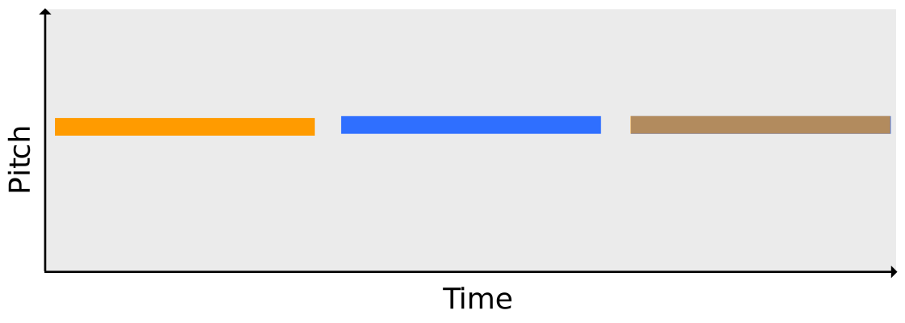

Common Fate Model for Unison Source Separation
Fabian-Robert Stöter, Antoine Liutkus,
Roland Badeau, Bernd Edler, Paul Magron
March 21, 2016


Common Source Separation Scenario

Unison Scenario

Wanted
- Signal representation which exploits modulations of
- Amplitude
- Frequency
- Phase
- Easily invertible
Related Work
- Frequency-dependent activation matrices by using a source/filter-based model (Hennequin 2011)
- HR-NMF models each complex entry of a time-frequency as a linear combination of its neighbours (Badeau 2011)
- Exploiting AM by computing a modulation spectrogram and factorise using NTF (Barker 2013)
Common Fate Transform
Common Fate in Audio
- Bregman 1994 used term "Common Fate" in auditory scene analysis.
- Ability to group sound objects based on their common motion over time
- Humans ability to detect and group sound sources by small differences in the FM and AM modulation is outstanding
Proposed: Transformation which groups common modulation texture
Common Fate Transform

Audio
$x \in \mathbb{R}^{72000}$
STFT

$\mathbf{X} \in \mathbb{C}^{352 \times 279}$
Common Fate Transform
|
STFT Grid $\mathcal{G} \in \mathbb{C}^{32 \times 48 \times 11 \times 6}$ |

CFT $\mathcal{V} \in \mathbb{C}^{32 \times 48 \times 11 \times 6}$ |
In Detail

Compared to modulation spectrograms...
- CFT is computed using complex STFT $X$
- Easily invertible
- Models phase dependencies between neighbouring STFT entries
- Patches span/merge several frequency bins
- Results in modulation texture
Common Fate Model
NMF
 $$\sum\limits_{j=1}^{J} \mathbf{w}_{j}(f) \circ \mathbf{h}_{j}(t) $$
$$\sum\limits_{j=1}^{J} \mathbf{w}_{j}(f) \circ \mathbf{h}_{j}(t) $$
Common Fate Model
 $$\sum\limits_{j=1}^{J} \mathcal{A}_{j}(a,b,f) \circ \mathbf{h}_{j}(t)$$
$$\sum\limits_{j=1}^{J} \mathcal{A}_{j}(a,b,f) \circ \mathbf{h}_{j}(t)$$
Common Fate Model
$$\sum\limits_{j=1}^{J} \mathcal{A}_{j}(a,b,f) \circ \mathbf{h}_{j}(t)$$
CPD/PARAFAC/NTF
 $$\sum\limits_{j=1}^{J} \mathbf{w}_{j}(f) \circ \mathbf{m}_{j}(b) \circ \mathbf{h}_{j}(t)$$
$$\sum\limits_{j=1}^{J} \mathbf{w}_{j}(f) \circ \mathbf{m}_{j}(b) \circ \mathbf{h}_{j}(t)$$
Signal Separation
- Compute the CFT from audio signal to get tensor $\mathcal{V}$
- Take the magnitude $|\mathcal{V}|$
- Initialise $\mathcal{A}$ and $\mathbf{h}$ with random non-negative values
- Apply multiplicative update rule to minimize $\beta$-divergence
- Synthesise factorised components using Wiener filtering
- Inverse CFT
Evaluation
Dataset
- Single pitches (C4 at 261.63 Hz)
- Viola
- Cello
- Tenor sax
- English horn
- Flute
- $\rightarrow$ ten mixtures of two instruments each
- Mixtures generated with a simple A — B — (A + B) scheme.
- Data were encoded in 44.1 kHz / 16 bit.
Models
- NMF Non-Negative Matrix Factorization
- MOD CP on modulation spectrogram
- CFM Common Fate Model
- CFMM Common Fate Magnitude Model
- CFMMOD CFMM with $a=1$
- HR-NMF High Resolution NMF model
Evaluation Results
Number of Components

Demo: Sax + Flute
Demo: Viola + Flute
Conclusion
- CFT a transformation based on a complex tensor representation computed from patches of the STFT
- CFM derived from the idea of humans perceiving common modulation over time as one source.
- Our results on unisonous musical instruments indicate that this method can perform well for this scenario.
Accompaniment Data
| Python Implementation |
github.com/aliutkus/commonfate pip install commonfate |
| More examples | www.loria.fr/~aliutkus/cfm/ |
| Presentation Slides | faroit.github.io/commonfate_slides |